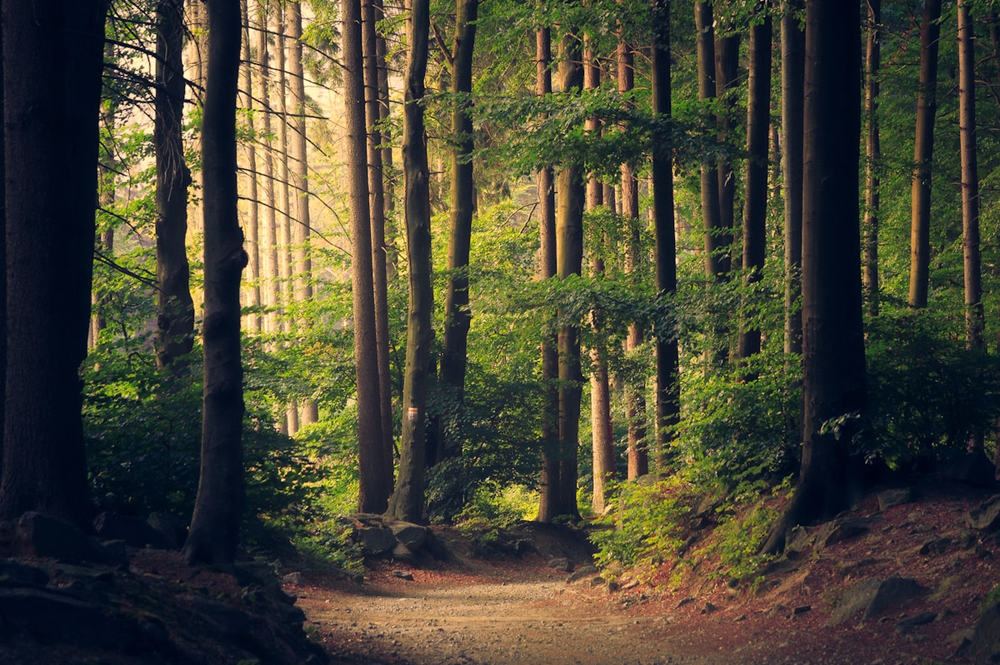

NParks has planted 2,000 native saplings along shaded stretches of East Coast Park as part of an ongoing effort to increase tree cover along popular cycling and walking routes. The species selected include sea almond and coastal casuarina, chosen for their tolerance of seaside conditions.
More than 400 volunteers joined weekend planting sessions over the past month, including residents from nearby estates and student groups. NParks staff demonstrated proper planting techniques and will monitor the saplings for the next two years to ensure healthy growth.
The agency said the new trees will provide additional shade for park users during hotter afternoons. Signage along the park connector explains the planting programme and encourages visitors to stay on designated paths to protect the young trees.